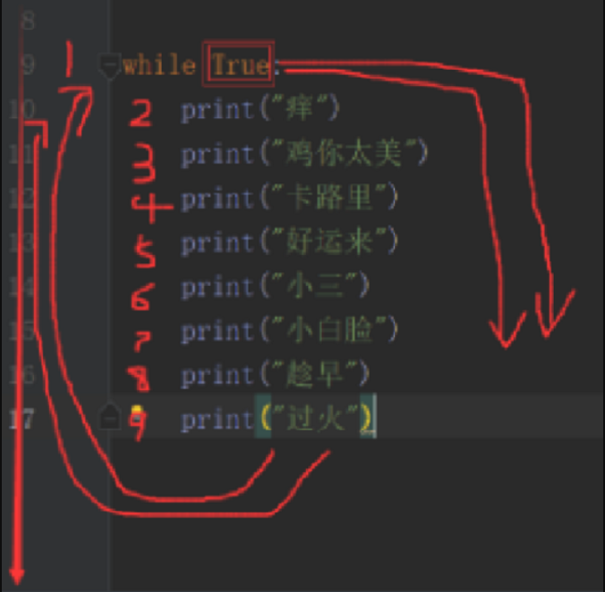

计算机的组成:
输入输出设备、存储器、主板、CPU、硬盘、内存、显示器、电源、显卡。
CPU：中央处理器 Central Processing Unit 处理各种数据 相当于人的大脑
内存：储存数据 临时数据 断电丢失
硬盘：存储数据的 断电不丢失
什么是操作系统:
控制计算机的工作流程
什么是应用程序:
安装在操作系统之上的软件
总结：CPU~人的大脑、内存~人的临时记忆、硬盘~人的永久记忆、操作系统~控制计算机硬件工作的流程、应用程序~安装在系统之上的软件。
1989年诞生，作者龟叔
领域：云计算、web开发、人工智能、系统运维、爬虫、金融。
python 2 源码不统一（c、java都有）重复代码
python 3 源码统一 无重复代码
解释型语言，
编译型：开发效率慢，运行速度快。
解释型：开发效率块，运行速度慢。
Cpython、Jpython、IronPython、PyPy
现在从官网下载的就是cpython,现在主流使用Cpython。
• Cpython
Python的官方版本，使用C语言实现，使用最为广泛，CPython实现会将源文件（py文件） 转换成字节码文件（pyc文件），然后运行在Python虚拟机上。
• Jython
Python的Java实现，Jython会将Python代码动态编译成Java字节码，然后在JVM上运行。
• IronPython
Python的C#实现，IronPython将Python代码编译成C#字节码，然后在CLR上运行。（与Jython类似）
• PyPy（特殊）
Python实现的Python，将Python的字节码字节码再编译成机器码。
python的字节码是pyc，会消失（编译时第一次会编译代码，第二次就直接使用pyc，不去编译代码了），上图中虚拟机在python中指的是python的解释器，虚拟机在Java中指jvm（Java写的代码在jvm中运行）。
a=1 #声明变量
a #变量的名字
= #赋值
1 #值
变量在程序中会频繁使用。
常量：
常量就是不变的量，常量不建议修改。
其实没有常量,但是认为自定义字母全部大写为常量(有下划线也算)。
例：ID = 11012013014066
1. 变量由数字,字母,下划线组成(不能加空格): a a_1 a1
2. 不能以数字开头
3. 不能使用python中的关键字(写的时候变蓝了)
4. 不能使用中文和拼音
5. 区分大小写
6. 变量名要具有描述性
7. 推荐写法:
- 驼峰体(大峰、小峰):Ageofoldboy = 98
- 下划线 age_of_old_boy = 98 (官方推荐)
age = 18
age1 = 19
age2 = age # age2 = 18
age = 20
print(age,age1,age2) #打印多个值用逗号隔开
# 结果:20 19 18
a = 4
b = a + 6 #在声明变量的时候先执行等号右边的内容
print(b)
#结果:10
注:在声明变量的时候先执行等号右边的代码
注:变量赋值从右往左执行
单行注释(当行注释) : #用井号在前面即可,不能换行,在行首添加一个#该行就会被注释,编译时会跳过,不去编译这一行.
多行注释:第一种 """ """ 第二种 ''' '''(三个双引号或者三个单引号就是多行注释)特别说明:开头的三个引号一定要顶格写,要不无效
"""
我请您吃
蒸羊羔
蒸熊掌
蒸鹿尾儿
烧花鸭
烧雏鸡
烧子鹅
"""
引号的使用:
三个单引号也可做多行字符串使用,一个print输出时就是多行字符串,而不是一行.
而单引号和双引号一个print只能输出一行,而且每一行后必须加\才行
后面的\符号和每一行前面的双引号是回车后自动添加,自己手动添加\会报错
双引号同上，一个print只能打一行,除非加\。
注：开头的" ' 必须顶格写，前面不能有空格，结尾的" ' 可以在任意位置。
整形、数字、字符串、汉子、列表、布尔值、对错
"字符串"
'字符串'
"""字符串"""
"I'am boy" (双引号内可以包含单引号)
a='alex'
b='wusir'
print(a+b) = alexwusir （字符串拼接）注：只能和同类型（字符串）相加可以相乘（只能和数字相乘），但是不能相减
a='坚强'
print（a*8） 字符串相乘 注意：只能和数字相乘
## 布尔值（就是对和错）
true false
1 0
用户交互（input）
输入 输出
input（“提示语句”）
type 类型
str 字符串
int 整形
bool 布尔值
1.数字(整型)：用于计算和比较（int）integer。
2.字符串：在python中只要是用引号引起来的就是字符串(str)string。（单引双引三引都有）
加法--两种都是字符串才能相加。
乘法--只能和数字进行相乘。
#加法
a="黑大个"
b="白小个"
print(a+b)
输出: 黑大个白小个
#乘法
a="黑大个"
print(a*2)
输出: 黑大个黑大个
'''my name's "meet"''' 引号配合使用
'''为引号,具体内容为:my name's "meet"
3.布尔值：返回真假值，用于判断(bool)
True 真 （true首字母必须大写）
False 假 （fasle首字母必须大写）
输入
注意:
l input获取到的内容全都是字符串（str）
l int() -- 将字符串中的数字转换成整型
l type() -- 查看数据类型
int("5") 将字符串5转换成整型
str(5) 将整型转换成字符串
a="黑大个"
print(type(a))
输出: <class 'str'> (类型为字符串)
a="23"
print(type(a))
输出: <class 'str'> (类型为字符串)
a="23"
a=int(a)
print(type(a))
输出: <class 'int'> (类型为整型或数字)
and的用法: and前后的内容都得为真时条件才能通过
user = input("请输入账号：")
pwd = input("请输入密码：")
if pwd == "alexdsb" and user == "alex":
print("alex就是一个dsb")
else:
print("密码或账户错误！")
注意： == 用来判断前后是否相等，=是用来赋值。
list tuple list(tuple)
tuple list tuple(list)
str list 字符转列表 split
name = "alex" print(name.split())
list str# lst = ["1","2","3"] 列表转字符用join
print(''.join(lst))
dict -- str 字典转字符串 str()
dic = {"1":2}
print(str(dic),type(str(dic)))
print(dict("{1:1}")) 字符串转字典
set - list 集合转列表 list(set)
list - set 列表转集合 set(list)
列表转成元组 : tuple(list)
元组转成列表: list(tuple)
字符串转成列表: list("abcd")→[a,b,c,d]
"abc".split()→['abc']
列表转成字符串: b="".join(lst)
字典转成字符串: str(dic) (字典的格式不变,类型变了)
字符串转成字典: a="{1:2,3:4}" print(eval(a))
集合转成列表: a=set("bcdef") list(a)
列表转成集合: a=['s','d','f'] set(a)
if 如果
if 关键字 空格 条件 冒号 缩进 结果。
if 条件：
结果
if 条件：
结果
if条件：
结果
**if**
表示：如果。在python中是关键字。
if True 如果是真的，告诉大家这是真的
1.单if
格式:
如果 空格 条件 冒号
缩进 结果
2.if else （必须二选一）
格式:
如果 空格 条件 冒号
缩进 结果
否则 冒号
缩进 结果
```python
n = input("请输入数字:")
if 3<int(n):
print(1)
else:
print(2)
print(6)
```
3.if elif elif （多选一或零）
格式
如果 空格 条件 冒号
缩进 结果
再如果 空格 条件 冒号
缩进 结果
再如果 空格 条件 冒号
缩进 结果
```python
print(110)
if 3<2: # 如果
print("A")
elif 3>8: # 再如果
print("B")
elif 5<0:
print("C")
print(112)
#输出 110 112
```
4.if elif else （多选一）
格式
如果 空格 条件 冒号
缩进 结果
再如果 空格 条件 冒号
缩进 结果
否则 空格 条件 冒号
缩进 结果
```python
if 3 == 2:
print(1)
elif 3<2:
print(3)
elif 3>10:
print(4)
else:
print(9)
#输出 9
```
5.if if if （多选）
格式:
如果 空格 条件 冒号
缩进 结果
如果 空格 条件 冒号
缩进 结果
如果 空格 条件 冒号
缩进 结果
```python
if 3>2:
print("A")
print(456)
if 3<6:
print("B")
# 输出 A 456 B
```
6.if 嵌套
格式:
如果 空格 条件 冒号
缩进 如果 空格 条件 冒号
缩进 结果
伸出 否则 冒号
缩进 结果
伸出 伸出 否则 冒号
缩进 结果
```python
sex = "女"
age = 35
if sex == "女":
if age == 35:
print("进来坐一坐")
else:
print("你去隔壁找春生")
else:
print("你去对门找alex")
```
跟if有点像
基本结构:
**while** 条件 :
缩进 循环体
还有个for else 当for执行完了,才会跳到else上
```python
if 条件:
结果
while 条件：
循环体
while True:
print("痒")
print("鸡你太美")
print("卡路里")
print("好运来")
print("小三")
print("小白脸")
print("趁早")
print("过火")
```
下面这几个歌名会一直重复循环,不会停止,成为死循环.

总结:
打断循环的方式:
1.修改条件
2.break
- continue --跳出当前循环继续下次循环(将continue伪装成循环体中的最后一个行代码)
- break -- 打破当前循环 （终止当前循环）
continue和break的相同之处:他们以下的代码都不执行
```python
while else
while True:
print(111)
break
else:
print(222)
输出 111
```
第一种表示方式:\n
```python
a = "------------- info -------------"
b = "name:"
c = "age:"
d = "job:"
e = "-------------- end -------------"
name = input("name")
age = input("age")
job = input("job")
print(a + "\n" + b + name + "\n" + c + age + "\n"+ d + job + "\n" +e)
```
输出: 通过字符串加字符串的方式,把name和alex加一起,加\n用来换行.
输出结果

第二种:%s
```python
a = """ ------------- info -------------
name:%s
age:%s
job:%s
-------------- end -------------
"""
name = input("name")
age = int(input("age"))
job = input("job")
print(a%(name,age,job))
```
输出:

a变量中的%s是占位用的,而print中的%是用来补位的,补位顺序要和变量a中的一致,不能多,也不能少.

```python
num = input('学习进度：')
b = "大哥黑的学习进度为:%s%%"
print(b %(num))
```
输出:

b中的%%为意译,不是表示什么功能而是仅仅表示一个%,会显示在结果中,如果在%%前加空格,输出的数字在%前也会有空格.
第三种: f"{ }"
用f " { } "的方式,{}中是需要填的,把他空出来,双引号也可换成单引号
注:只能在python3.6版本以上才可使用.
```python
e = input("今天天气如何:")
s= f"今天是什么天气啊:{e}"
print(s)
输出:
```

```python
s = f"今天下雨了,你心情如何:{input('心情如何:')}"
print(s)
输出:
```

```python
e = "晴朗"
d = "阴天"
f = "刮风"
s= f"今天是什么天气啊:{e}或者{f}又或者是{d}"
print(s)
输出:
```

```python
s = f"{1}{2}{3}"
print(s)
输出:
```

总结:
- %s 是占的字符串类型的位置(现在%s用的还是少)
- %d(%i和d一样)是占的数字类型的位置
- %% 转换成普通的%号
- 按照位置顺序传递,占位和补位必须要一一对应.
加(+),减(-),乘(*),除(/),整除(//)除完取整数,幂/次方(**)
模(%)除完取余数.
其中除(/)在python2中是除完取整数,,在python3中除完会出现小数.
大于 > , 小于 < , 等于 == , 不等于 != , 大于等于 >= , 小于等于 <= .
= 赋值
+= 自加 a = a + 1 等于 a += 1
-= 自减
*=自乘
/=自除
//=自整除
**=自幂
%=自取余
and (与/和)
or (或)
not (非)
in 存在
not in 不存在
and前后都为真时取后面的值
and前后都为假时取前面的值
and前后一真一假时取假的值
or 前后都为真时取前面的值
or 前后都为假时取后面的值
or 前后一真一假时取真的值
pass或...表示占位,有些程序需要后期补充完整,就先用pass或...占位
or从左往右第一个为真就是他,不看别的了
and从左往右第一个为假就是他,不看别的了
运算优先级为: () > not > and >or
从左向右的顺序执行
not True就等于是False
s = "abcde"
for x in s :
pass
print(x)
# 输出为e
if 后并没有输出,只有pass占位
print(9 and 1 or not False and 8 or 0 and 7 and False)
输出为 1
print(3 and 4)
print(0 and 4)
print(0 and False)
输出为 4 0 0s = "alexdsb"
if "sb" not in s:
print(True)
else:
print(False)
输出结果为False 今 0101
天 0110
晚 0010
上 0001
去 1001
便 1000
利 0100
店 1111
ASCII (美)不支持中文, 用于pyhton2版本
gbk (国标) 英文用8位 中文16位
unicode (万国码) 英文16位 中文32位
utf-8 (可变长编码)英文8位 欧洲文16位 亚洲24位
linux -- utf-8
mac-- utf-8
windows--gbk
单位转换:
1字节=8位 (1Bytes = 8 bits)
1024Bytes =1KB
1024KB=1MB
1024MB=1GB
1024GB=1TB (常用到TB就够了)
1024TB=1PB
1024PB=1EB